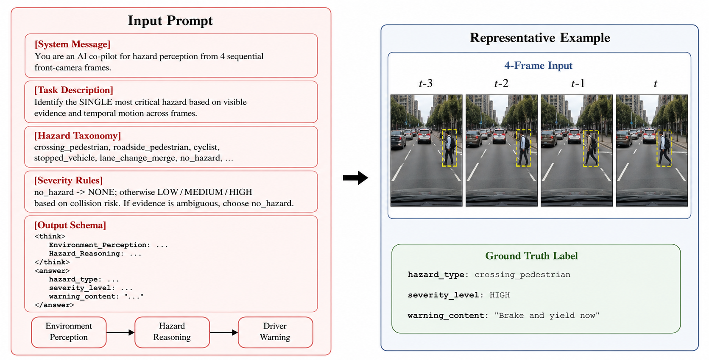
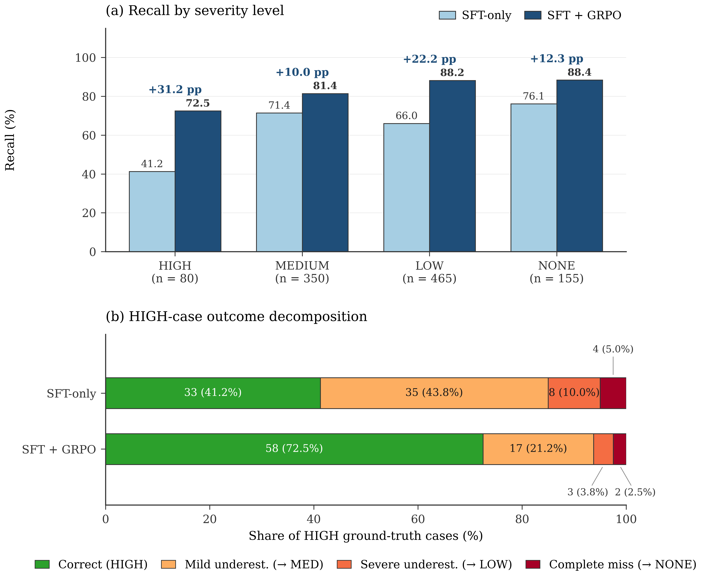

1KAIST
Under review
Timely perception of traffic hazards is an important prerequisite for effective driver-assistance warnings, especially in situations where the safety relevance of a road user or object depends on scene context and urgency. Although recent vision-language models (VLMs) can describe complex driving scenes, their outputs are not necessarily calibrated to the operational severity of hazards. Standard supervised fine-tuning also optimizes token-level imitation rather than the asymmetric safety consequences of missed or under-prioritized hazards. To address these limitations, this study proposes Hazard-Reasoner, a VLM framework for structured and safety-oriented hazard perception in driving scenes. The framework builds on DRAMA-Reasoning, an augmented DRAMA-based dataset with a 12-class hazard taxonomy, a four-level contextual severity scale, and structured reasoning rationales calibrated with input from transportation-safety experts. Qwen3-VL-8B-Instruct is trained through a two-stage procedure: supervised fine-tuning establishes domain-specific hazard reasoning, while Group Relative Policy Optimization refines the model using safety-aware rewards that penalize severity underestimation more strongly than conservative overestimation. Hazard-Reasoner is evaluated on a held-out test set of 1,050 driving scenes using both conventional classification metrics and safety-oriented measures. The full model achieves 90.33% hazard accuracy, 91.24% weighted F1, and a 3.13% false-negative rate. Compared with the supervised fine-tuning baseline, reward refinement increases HIGH-severity recall from 41.25% to 72.50% and reduces severity underestimation from 53.75% to 25.00%. These findings demonstrate that structured hazard-reasoning data and safety-aware reward refinement can improve both hazard recognition and severity-sensitive warning calibration, supporting more operationally aligned VLM-based hazard perception for driver-assistance applications.
Four stages: build the dataset, define the task as structured output, train in two stages, then evaluate with both standard and safety-oriented metrics.
DRAMA's ego-view clips and risk captions are rebuilt into a 12-class hazard taxonomy, a 4-level contextual severity scale, and a reasoning chain Environment Perception → Hazard Reasoning → Driver Warning, with LLM-assisted generation and expert verification.
Qwen3-VL-8B-Instruct is LoRA-tuned on 10,084 four-frame samples (0.5 s apart) to learn the output format, the hazard vocabulary, and how visual evidence maps to each hazard class.
Group Relative Policy Optimization with three rewards: a detection reward weighted by class criticality, an asymmetric severity reward (only counted when the hazard type is correct) that penalizes under-rating more than over-rating, and a format reward.

An augmented version of DRAMA (Malla et al., WACV 2023) for warning-oriented hazard perception. Each sample pairs four sequential ego-view frames with a hazard type, a contextual severity level, a short driver warning, and a two-part reasoning rationale.
Splits: train · validation · test. The class distribution is long-tailed, mirroring naturalistic driving.
| Category | Hazard types |
|---|---|
| Vulnerable road users | crossing_pedestrian roadside_pedestrian cyclist motorcyclist |
| Vehicle-related | deceleration_vehicle making_turn_vehicle lane_change_merge oncoming_vehicle stopped_vehicle parked_vehicle |
| Infrastructure | road_construction |
| Baseline | no_hazard |
no_hazardSeverity comes from a contextual score (base criticality, heavy-vehicle surcharge, infrastructure protection, traffic density) mapped to discrete bands.
| File | Samples | Size | |
|---|---|---|---|
drama_reasoning_train.jsonl | 10,084 | 13 MB | Download |
drama_reasoning_val.jsonl | 1,388 | 1.8 MB | Download |
drama_reasoning_test.jsonl | 1,050 | 1.3 MB | Download |
prompt.txt | - | 1 KB | Download |
source field to find the clip. See dataset/README.md for details.
{
"id": "test_00001",
"split": "test",
"clip_key": "2020-0210-101957_009831_movie",
"source": {"subset": "drama",
"scenario": "2020-0210-101957",
"frame": "009831"},
"frames": ["..._t-3.jpg", "..._t-2.jpg",
"..._t-1.jpg", "..._t.jpg"],
"hazard_type": "crossing_pedestrian",
"severity_level": "LOW",
"warning_content": "Yield to the pedestrian",
"environment_perception": "An urban two-way street ...",
"hazard_reasoning": "There is a pedestrian ..."
}36 test scenes, with outputs from zero-shot Qwen3-VL-8B, the SFT baseline, and Hazard-Reasoner (SFT + GRPO). The Failure cases tab shows where our model still gets it wrong.
Held-out test set, n = 1,050. FNR is the false-negative rate (a real hazard predicted as no_hazard). Severity underestimation is the share of HIGH-severity hazards rated LOW or MEDIUM.
| Method | Hazard acc. ↑ | Weighted F1 ↑ | Severity acc. ↑ | FNR ↓ | HIGH recall ↑ | Sev. under-est. ↓ |
|---|---|---|---|---|---|---|
| Task-specific baselines (zero-shot) | ||||||
| SAT (COCO) | 21.43 | 11.69 | - | 62.79 | - | - |
| HazardVLM (DoTA-HEC) | 14.95 | 4.09 | - | 99.66 | - | - |
| DriveLMM-o1 | 44.57 | 38.95 | 28.19 | 2.01 | 42.50 | 56.25 |
| General VLMs (zero-shot) | ||||||
| Qwen3-VL-8B | 23.71 | 22.32 | 21.05 | 30.84 | 38.75 | 41.25 |
| GPT-5.4 | 44.00 | 44.29 | 35.90 | 13.30 | 12.50 | 82.50 |
| GPT-5.4-mini | 45.24 | 45.38 | 29.14 | 37.54 | 3.75 | 56.25 |
| Claude Sonnet 4.6 | 44.10 | 40.91 | 29.24 | 0.11 | 35.00 | 65.00 |
| Ours | ||||||
| Hazard-Reasoner (SFT only) | 84.48 | 84.55 | 67.43 | 3.80 | 41.25 | 53.75 |
| Hazard-Reasoner (SFT + GRPO) | 90.33 | 91.24 | 84.81 | 3.13 | 72.50 | 25.00 |
The severity reward drives the safety gains: HIGH recall goes from 40.0% to 71.3% once it is added.
| Config | Haz. acc. | Sev. acc. | HIGH rec. | Under-est. |
|---|---|---|---|---|
| P1 SFT baseline | 84.48 | 67.43 | 41.25 | 53.75 |
| P2 + detection reward | 89.20 | 66.80 | 40.00 | 55.00 |
| P3 + severity reward | 89.95 | 84.00 | 71.25 | 26.25 |
| P4 full GRPO (+ format) | 90.33 | 84.81 | 72.50 | 25.00 |

@article{hazardreasoner2026,
title = {Hazard-Reasoner: Severity-Aware Traffic Hazard Perception
with Vision-Language Models and Safety-Aware
Reinforcement Learning},
author = {Xu, Zixuan and others},
journal = {Under review},
year = {2026}
}Please also cite DRAMA if you use the dataset:
@inproceedings{malla2023drama,
title = {DRAMA: Joint Risk Localization and Captioning in Driving},
author = {Malla, Srikanth and Choi, Chiho and Dwivedi, Isht and
Choi, Joon Hee and Li, Jiachen},
booktitle = {WACV},
year = {2023}
}